k-Day 057｜哪裡的羊肉最好吃？
六點不到卡車司機們都起床洗漱，於是乎也跟著起身收拾。看了看氣溫，已經不像四月初的清晨那麼冷，也許往後可以更早動身。
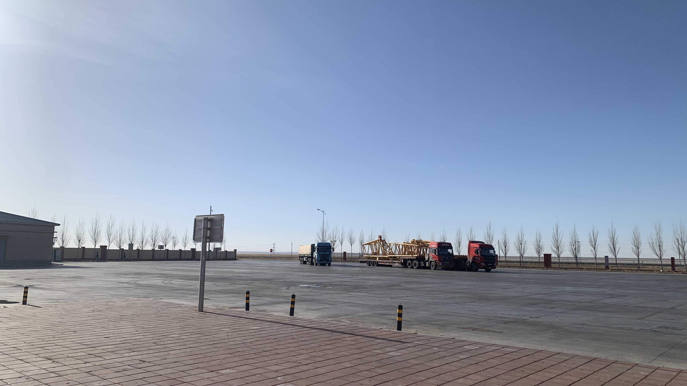
坐在角落用小賣部的熱水泡咖啡，配上昨晚買的蒙古奶油餅當早餐。
小賣部大哥打掃環境看到我：「還沒走呢？睡在這不冷嗎？」
「這裡很舒服啊！」簡直豪華度假村呢，我心想。
聽到這話大哥呵呵呵地笑著走了。
今日目標滿都拉圖，距離26公里。按照前兩天走走停停的狀態，應該可以在中午前抵達。
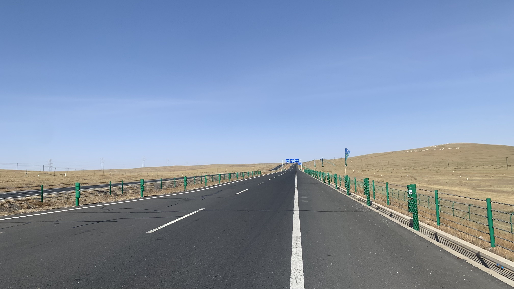
出發時迎來短暫的順風，沒多久就開始轉向。
仍然是一半騎車一半步行的節奏，逆風加上無數的坡，左膝前側開始抽痛。風大到開始耳鳴，想起出發前在台灣開心的說想見識蒙古春天的風，也許我具有心想事成的體質，這段路上經常這麼想著。
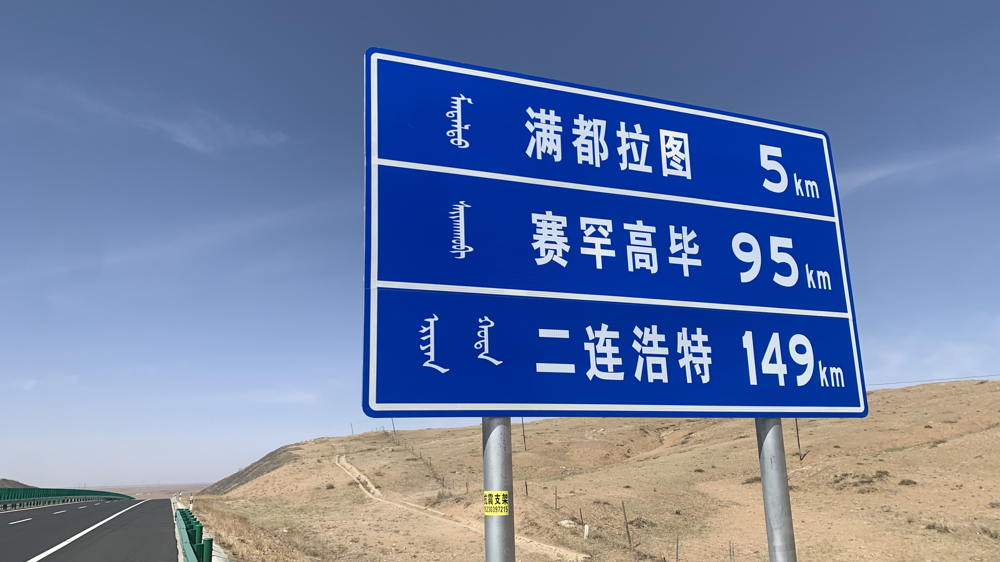
將二十三號靠在路邊休息時被風吹倒了兩次，希望裡面的電腦沒有受傷。
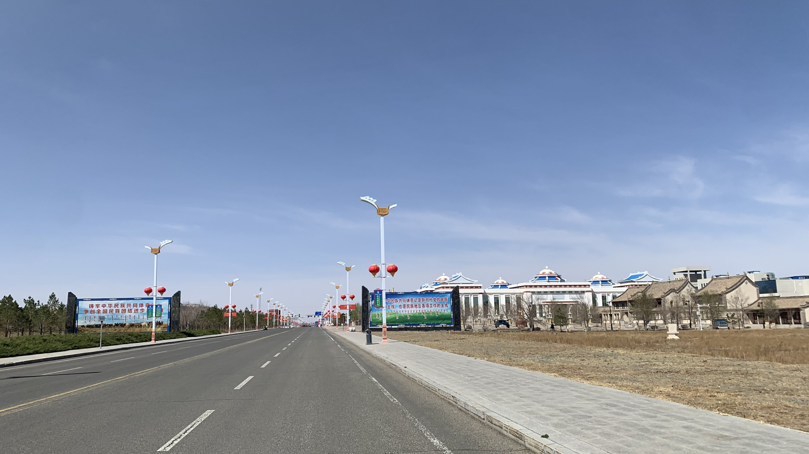
十點半就到了，買一瓶雀巢咖啡獎勵自己。坐在超市門口啜飲珍貴咖啡時，一位帶著黑色洋基棒球帽，穿著海軍藍教練外套的大叔走過來。
意料之外地，大叔一聽到我的路線，馬上開啟日本研究學界和遼國文明的講解。
也許是我的反應過於驚訝，大叔越講越起勁。說到遼國是最強大的時代，各民族交流貿易盛行，連長城的作用都消失時，大叔的音量已呈現路邊說書人的氣勢。
此時旁邊走來兩位嘻哈打扮的青年，他們對遼代歷史沒啥興趣，倒是幫我檢查車胎，提供如何檢牛糞生火、搭帳篷時應付狼群的資訊。其中一位青年漢語較好，大部分時間由他代表談話。
這裡離口岸已經不遠，想知道他們對蒙古的看法，果不其然他們的回答跟遼寧赤峰得到的資訊完全相反。說漢語的青年告訴我：「蒙古的文化水平很高，那裡的人會說英語、俄語、法語」，「如果你的行為尊重，他也不會不喜歡你。」
兩位青年說這裡有免費的汽車營區，就在剛剛進城路過的文化中心停車場。可以把住宿費省下來，到對面的新式蒙餐吃有名的蘇尼特羊。
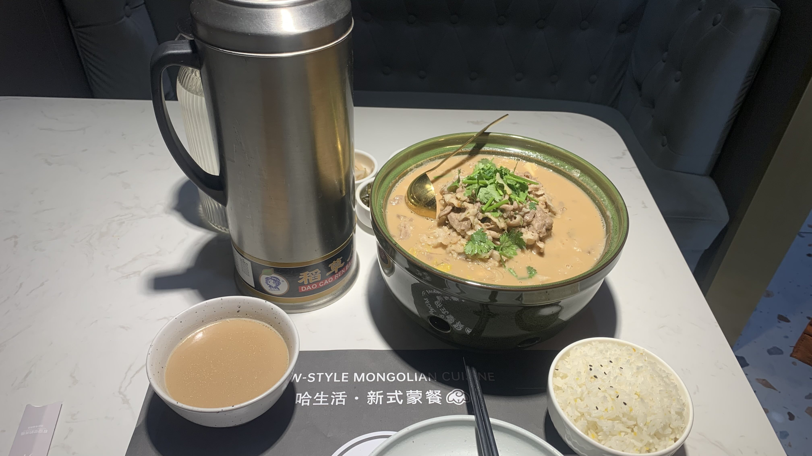
謝過他們往馬路對面走。所謂新式蒙餐大概是提供了不同以往的烹飪手法，比如這道麻醬羊肉混著冬粉大白菜絲的料理。
羊肉屬於軟嫩的口感，不確定有名的原因，據說是歷代進貢的貢品。按照個人飲食習慣，岡山羊肉的彈性和湯頭、沾醬搭配的層次更豐富一些。
不確定是老闆還是領班的蒙族女士聽到我要去蒙古，跟我說那裡的人文化水平很高，有很多有趣的書。她老公就是在兩地開卡車帶貨的。
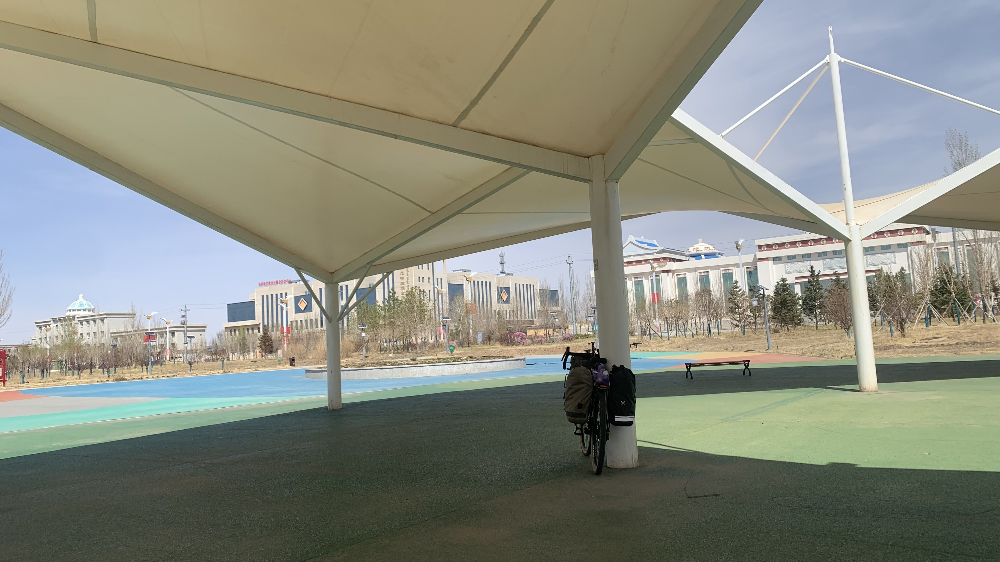
吃飽後往公園方向移動，太陽太大，此刻搭帳篷會變成天然桑拿房。先躺在長椅上休息。二十三號又被風吹倒。今天已經倒了三次，停靠時要更留意風向才行。
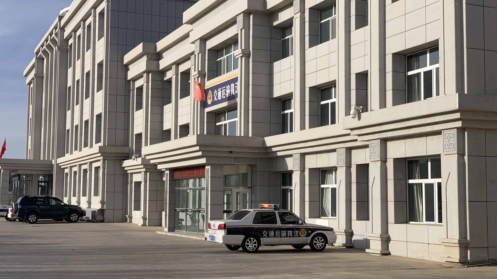
下午三點在營區搭好帳篷，然而公園的廁所水管凍爆，暫停使用。文化中心和運動中心的巨大建築也都貼著暫停開放的告示，因此走到交警大樓借廁所。
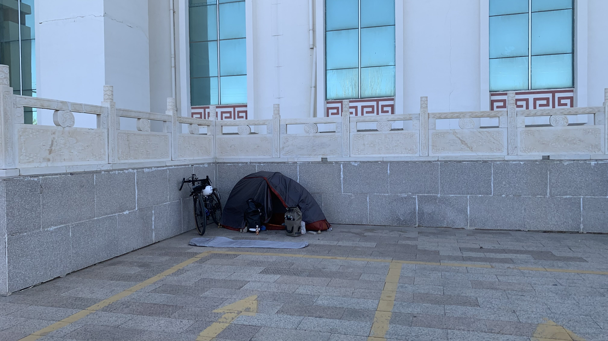
晚上六點，風太大，把帳篷搬到角落位置，又拿了兩塊大石頭壓住風繩。
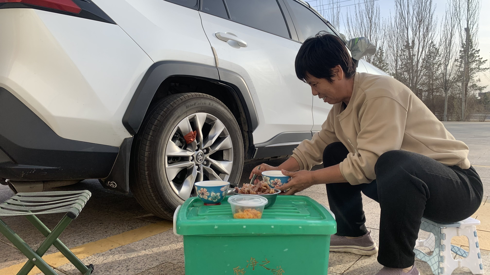
此時隔壁來了一對開休旅車的退休夫妻，長得很像某位鄉土劇演員的大哥先主動過來參觀了我的帳篷，聊了一會兒。沒多久大姐走來和我說：「小伙子，待會一起吃飯吧！」
正想著中午花了大錢吃飯，晚上要啃黃油餅的我立刻點頭致謝。
大哥和大姐都是呼和浩特人，因為冬天太冷，在西雙版納租了房子過冬。此刻兩人已開了三千公里左右的車，本來今天要到家，但往後兩百里沒有人，因此決定繞進來住下，明天就回到呼和浩特。
「你們也太浪漫了！」我這麼說的時候大姐看了一下旁邊怕自己照片被放到外網，不想入鏡的老公，問說：「我們很浪漫嗎？」大叔呵呵傻笑。
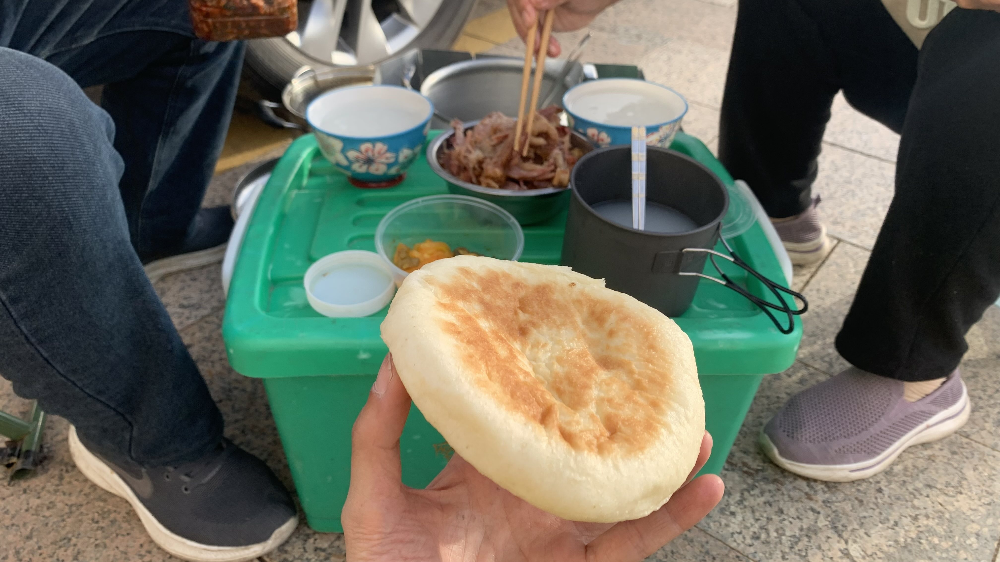
大姐說我和他兒子差不多年紀，吃飯時一直說「孩子！多吃點！出門在外不要客氣！」
出門在外，昨天騎重機的蘇旗大哥也這麼說，看來此處的人對於旅人是友善的。
他們兩人都在牧場工作，我說中午吃了當地的蘇尼特羊肉，以前是貢品。兩人異口同聲說「這裡的羊肉不好吃。」
「那麼哪裡的羊肉才是最好的呢？」我問。
「我們那兒的最好，我們的羊吃的都是草。」看來內蒙也有地區食物之爭啊，太有趣了。
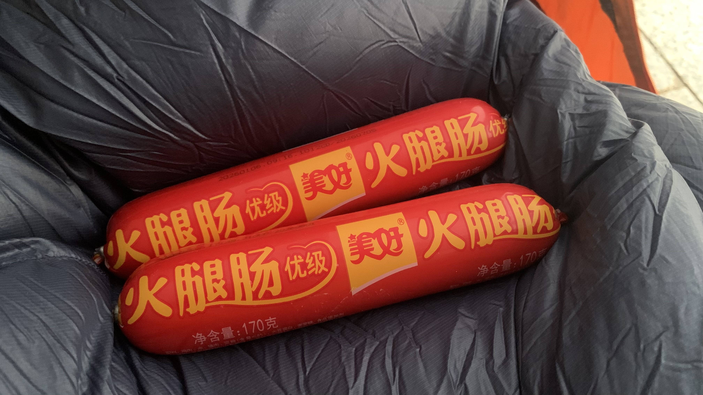
吃飽喝足回到帳篷準備休息，大哥大姐趁著夕陽要去附近逛逛。
躺下後大哥又拿了兩根火腿腸給我，在蘇旗遇到好多好人，被當盤子的煩悶獲得了救贖。終於可以抱著更正向的心情往口岸前進。
昨天睡覺時發現睡墊好像破洞了，氣消得越來越快，找不到破洞的地方。今天漏氣的速度更快了，祈禱這幾天不要太冷。今日獲得口岸放假到5/3，趁著多留幾天趕緊網購一個蛋殼睡墊送到二連浩特。
今日花費： 蒙餐 107、咖啡 6元